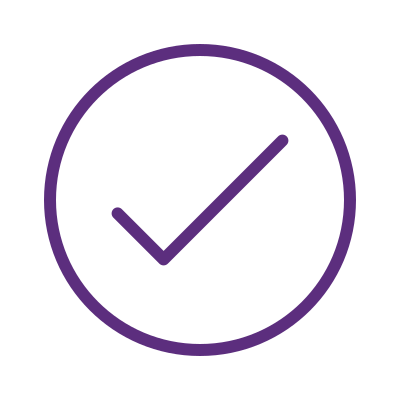

¡Message Sent!
I'll get back to you as soon as I read this.
Would you like to download my CV?
Social communicator and graduate journalist
Show moreAs someone who has recently completed a certificate in Frontend Development, I'm excited to apply my newly acquired skills and knowledge to a challenging position as a Junior Frontend Developer.
In my previous roles, I honed my communication skills through interactions with customers and team members. I also developed my problem-solving skills by identifying and addressing issues and concerns that arose. These skills are essential to frontend development, where clear communication and problem-solving are critical for success.
I'm eager to bring my enthusiasm, dedication, and transferable skills to a new challenge in the field of frontend development. I look forward to discussing how my skills and experience can contribute to the success of your organization.
I try to bring a wealth of experience and strong interpersonal abilities to the table. I am a skilled communicator with a deep understanding of cultural nuances and a talent for setting and achieving goals. I own an admirable resilience, independence, and empathy, coupled with unwavering integrity and a natural inclination towards assertiveness.
Soft Skills:
Aspiring Junior Frontend Developer with a strong passion for coding and web development. Skilled in HTML, CSS, JavaScript, and React. Currently I continue to expand my knowledge in Platzi and Alura. Actively working on personal and freelance projects to further develop skills.
Hard Skills:
I am a quiet person, I like a healthy environment with interesting conversations and a good overview of nature. And although I enjoy my own company I am quite sociable.
Hobbies:
Even though I am only one year into the study process, I have sought to take on challenges in my training by relying on sites such as devchallenges.io and the places where I am training such as Platzi and Alura Latam. Here are the links so you can see the challenges that I have ventured to do so far.
Show MoreIn a self-taught way I have also pursued to nurture and improve my skills as a Front end developer. Trying mainly to focus on practicing my logical thinking and how to solve problems with it. One of the sites I've been exploring for the longest time is Hackerrank. I've had a lot of fun practicing different things there.
Show MoreIn addition to the self-taught motivation, the greatest and most complete of my experiences with Front end development is thanks to the training that I am currently taking. Supported by 2 platforms of knowledge that are Platzi and Alura Latam. The projects that I have been able to develop during these trainings have served me too much to have a portfolio with a strong start. The results so far are quite gratifying and I leave you the link so you can see them.
Show MoreIt would be very interesting to talk about how we could develop a next project together. You can contact me by this way, twitter, email or linkedIn.
I'll get back to you as soon as possible!
I'll get back to you as soon as I read this.
Sorry, the message could not be sent. Try again later